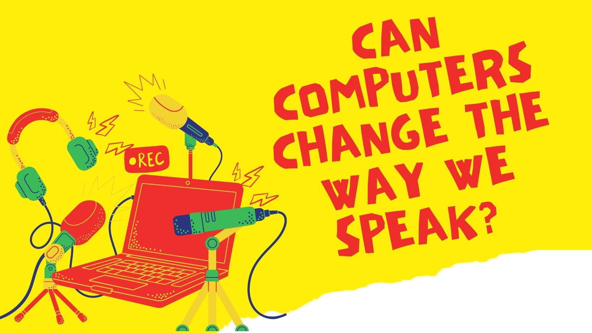

Some months ago, I bought my first smart speaker: an Amazon echo. Because I live in the U.S., Alexa's default language was English. Even though I'm a native speaker of Spanish, I can also speak English, so it wasn't really a problem for me. However, when pronouncing Spanish proper names (e.g., people or places), I would still use my Spanish pronunciation. It turns out Alexa couldn't understand me unless I anglicized those names (ugh!), something I now do automatically every time I interact with my Amazon echo.
Having to change the way you speak so that a smart speaker, a computer, or any other device can understand you is actually a very common practice, even though it should be the other way around (i.e., devices adapting to people).
But why does this happen?
The term "linguistic alignment" is used by linguists to describe how interlocutors adapt or accommodate to each other during conversations. This natural phenomenon is motivated by a variety of reasons. For example, speakers often copy the words or expressions their interlocutors use to show positive feelings towards them (social affect). As you can imagine, this is largely an unconscious process.
Linguistic alignment has also been found to occur in human-computer interactions. And not only that, but it also seems to be stronger! This means that we are more willing to change the way we speak when interacting with a smart speaker (even if it's not a real person) than when interacting with a friend. Of course, the reasons why we choose to align with our smart devices are different from the reasons why we choose to align with other people.
For instance, a study showed that when talking to Alexa, speakers used a slow speech rate and exaggerated some of the sounds so as not to be misunderstood. Most ASR systems are biased towards monolingual standard language varieties and sometimes have issues understanding other accents (just what happened to me!), which explains why speakers make those changes.
Linguistic alignment doesn't only occur at the pronunciation level, but also at the grammatical level. There is evidence that the sentence structures we're exposed to through computers and other devices can make us reuse those structures in the conversation. For example, a study found that the output of Google Translate was able to modify speakers' preferences for certain structures over others.
Despite the growing evidence that speakers unconsciously change the way they speak to align with smart speakers, computers, and similar devices, most of these changes happen due to how we perceive these systems. That is, since we think they are "imperfect" and will have trouble understanding us, we decide to be more like them (e.g., by speaking slowly, by reusing their words or structures).
I think it's unlikely that we will continue aligning so strongly with these devices as these technologies develop. On the one hand, ASR systems will become better as training data is more representative of different dialects and language varieties. This means that users will be able to pronounce words in a more natural manner. Likewise, as systems become better at handling ambiguity and understanding nuances, we might become more creative and less dependent on the system's output.